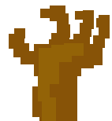
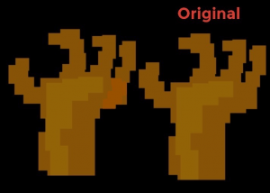
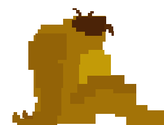
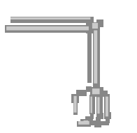
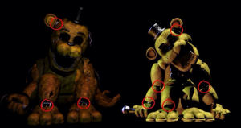
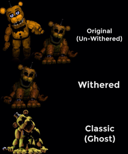
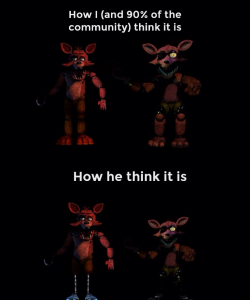

If you see any issues, please do make us aware via our Contact Form.
Thank you for browsing FNaFLore.com, we hope you enjoy the improvements that are coming to the site!

On the FNaF 2 location, Fredbear and the Shadow Animatronics
After being asked to talk, me and SonicTHD decided to talk a bit on the lore of FNaF. There will hopefully be another discussion going up soon, but this one came first, so I’m posting this one!
SonicTHD is fairly fluent in English, but has said he’d like the spelling fixed in some places. I’ve tried to not change his points while doing so.
[22:09:35] Kizzycocoa – ok, so let’s start.
[22:10:17] Kizzycocoa – so, lets go to the drawings. What’s the theory you’d like to discuss?
[22:10:50] SonicTHD – So, I loved your theory about the Drawings and is a good observation about the old times of that restaurant
[22:11:12] SonicTHD – But there’s things which don’t fix in this theory
[22:11:20] SonicTHD – And these thing’s are the phone calls
[22:11:55] Kizzycocoa – Ah, I see. You think there is a discrepancy between my theory, and the phone calls?
[22:12:07] Kizzycocoa – to be clear, that would be This Observation?
[22:12:24] SonicTHD – Exactly
[22:12:51] Kizzycocoa – Ok, I love to discuss and poke holes in theories. What do the phone calls say that refutes the observation?
[22:13:16] SonicTHD – Well, we know about that famous theory which says the phone calls are pre-recorded, right?
[22:13:30] SonicTHD – The calls from FNaF 2
[22:17:09] Kizzycocoa – yes, I do know that theory
[22:17:18] Kizzycocoa – it presumes the phone calls were part of the older location, I believe?
[22:17:57] SonicTHD – The Drawing Theory (I like to call that) talks about the old opening of FNaF 2 location had the Originals (It’s how I like to call the Un-Withereds), Funtime Foxy, Puppet and Jay Jay, right?
[22:18:20] SonicTHD – Jay Jay because the Drawing on the office is purple, not red, which could be the origin of Jay Jay
[22:18:35] Kizzycocoa – not too sure about JJ. I mean, the image in the office doesn’t match either, really
[22:18:55] Kizzycocoa – but, I think the JJ/BB “series”, if it is a series, certainly
[22:18:59] Kizzycocoa – so for the sake of argument
[22:19:10] Kizzycocoa – lets say that BB/JJ were made/active at the same time
[22:19:16] SonicTHD – Okay
[22:19:40] SonicTHD – So that opening had them
[22:19:58] Kizzycocoa – also, to be clear, this is the Funtime Toy Foxy
[22:20:08] SonicTHD – What do you mean?
[22:20:09] Kizzycocoa – not the Sister Location Foxy
[22:20:15] SonicTHD – Oh of course
[22:20:22] Kizzycocoa – just, so we’re 100% on the same page :P
[22:20:28] Kizzycocoa – but yes, I fully agree with that theory
[22:20:57] SonicTHD – Okay, so if the phone call theory is right and fix in this timeline, is impossible to fix it
[22:21:15] Kizzycocoa – I don’t believe the Phone Call theory is right at all.
[22:21:26] SonicTHD – Because Phone Guy in some calls talk about the Toys and the Withereds
[22:21:26] Kizzycocoa – Shall I elaborate on my issues with that theory?
[22:21:32] SonicTHD – Of course
[22:21:42] Kizzycocoa – Ok, so I will take 3 issues.
[22:22:09] Kizzycocoa – First off, the “older models” in the back-room. Obviously, with the older models in use, there’d not be multiple older models.
[22:22:18] SonicTHD – Yes I agree
[22:22:21] Kizzycocoa – ….though that said, Foxy would be in there
[22:22:30] Kizzycocoa – as would the Springlocks
[22:22:51] Kizzycocoa – I suppose, potentially, that falls flat. But, he talked of “The Smell”
[22:23:05] Kizzycocoa – Still
[22:23:11] Kizzycocoa – that’s my first worry.
[22:23:19] Kizzycocoa – my second is, the night 6 phone call.
[22:23:24] SonicTHD – Exactly
[22:23:34] Kizzycocoa – because we know, the night guard switches between 6 and 7.
[22:23:48] Kizzycocoa – now, this could be seen as a small detail, someone could dismiss it
[22:23:59] Kizzycocoa – but, my third issue – I believe – destroys that theory.
[22:24:02] Kizzycocoa – the murdered kids.
[22:24:33] Kizzycocoa – we know there were 3 murders. One of the Puppet child, one with the 5 kids in the FNaF1 location, and one with the 5 kids in the FNaF2 location
[22:24:56] Kizzycocoa – now, the problem is, the phone incident
[22:25:06] Kizzycocoa – it is heavily implied to be the discovery of a murder.
[22:25:26] Kizzycocoa – if we take the minigames, we can clearly see the toy animatronics present
[22:25:54] Kizzycocoa – therefore, the second set of murders had to take place in the FNaF2 location, during the grand re-opening
[22:26:06] Kizzycocoa – which could be anywhere between 1-3 weeks prior
[22:26:49] Kizzycocoa – There is naturally the chance that Phone Guy is describing a separate event, but Id’ ask, what event could that be?
[22:27:11] SonicTHD – The first?
[22:27:22] SonicTHD – I mean, the first five kids
[22:27:49] Kizzycocoa – Not likely. They died in the first location that was “left to rot”, with the withereds that they tried to refurbish, but the smell lingered.
[22:27:59] SonicTHD – Yes
[22:28:01] Kizzycocoa – they were dead before the FNaF2 location opened it’s doors.
[22:28:11] SonicTHD – Oh
[22:28:21] SonicTHD – Well, this could makes sense
[22:28:31] SonicTHD – Because we see Purple Guy with a badge
[22:28:48] Kizzycocoa – Lets recall who Purple Guy is now, for reference
[22:28:54] SonicTHD – And this sprite is like the FNaF 4 restaurant, which is before FNaF 2
[22:29:01] Kizzycocoa – he is the technician, or secondary-owner
[22:29:04] Kizzycocoa – he does the robotics
[22:29:28] Kizzycocoa – Oooh, don’t go saying that too loudly. you’ll piss off a lot of people if you claim FNaF4 is before FNaF2 :P
[22:29:44] Kizzycocoa – I think that’s the most likely timeline, but still, it’s not solid, set in stone
[22:30:12] SonicTHD – Well, a guy said me a interesting thing about this, but is good let’s focus on the calls
[22:30:19] SonicTHD – For now
[22:30:36] Kizzycocoa – I’d like to pre-empt an argument. Are you going to go on and say the FNaF2 location is the sister location to Fredbear’s, mentioned in FNaF3?
[22:31:23] SonicTHD – No, for me the FNaF 3 phone calls are in Stage 01 location, which the sister location is the same location as Fredbear & Friends, before the location “left to rot”
[22:31:32] Kizzycocoa – Ah, good. good.
[22:31:42] SonicTHD – I mean, Stage 01 and “Left to rot” are the same, but in different times
[22:31:51] Kizzycocoa – I somewhat agree
[22:31:56] Kizzycocoa – I think they may run side-by-side
[22:32:09] SonicTHD – Could be
[22:32:11] Kizzycocoa – Like, literally 6 characters.
[22:32:16] Kizzycocoa – Still, we’re getting off point
[22:32:27] Kizzycocoa – we’re talking about the pre-recorded theory
[22:32:36] SonicTHD – Yes
[22:32:40] Kizzycocoa – so, I’ve laid out my reasons. Where were we going after this?
[22:33:09] SonicTHD – What do you mean? We finish the topic or we could talk more about this?
[22:33:14] Kizzycocoa – well
[22:33:22] Kizzycocoa – we were talking about the Drawing theory
[22:33:24] SonicTHD – Because there is some things I would like to talk before finish the topic
[22:33:31] Kizzycocoa – then you said that contradicted the Phone Call theory
[22:33:36] Kizzycocoa – correct?
[22:33:39] SonicTHD – Yes
[22:33:57] Kizzycocoa – so, we’ve established that, and I fully agree. so….where is the conversation going now?
[22:34:00] Kizzycocoa – :P
[22:34:09] SonicTHD – So another topic right? :v
[22:34:25] Kizzycocoa – well, is there anything else to that?
[22:34:45] Kizzycocoa – or, were we just kicking the corpse of the phone theory for giggles? :P
[22:34:47] SonicTHD – There is before we go for another, and stills in the phone calls
[22:35:39] SonicTHD – Well, first talks about the old location, with doors, which means is the same FNaF 1 location, but in the time of “left to rot”
[22:36:12] SonicTHD – Why he would talk about that if probably that location closed in 85, which the last opening of FNaF 2 is in 86?
[22:36:47] SonicTHD – Second is how he talks about the building been lockdown
[22:37:08] SonicTHD – He says “the building will be closed for a while”, well he talks with certain
[22:37:40] SonicTHD – But this “while” is a lie, which the next location is 5 years after in FNaF 1, in a different location
[22:38:03] Kizzycocoa – Well, for me, I’d reference the Bite of 87.
[22:38:08] Kizzycocoa – I still believe Mangle caused the bite.
[22:38:34] SonicTHD – Because he said “the animatronics walking during the night”?
[22:38:48] Kizzycocoa – yes, especially since in FnaF2, they can walk around during the day.
[22:38:59] SonicTHD – Yes I said wrong, day :v
[22:39:13] SonicTHD – Well in the past like 3 months ago I still believed in this theory
[22:39:39] SonicTHD – But in the ending of FNaF 2 newspaper is never mentioned a bite or something, just “problem with the new animatronics”
[22:39:55] SonicTHD – I think the newspaper wouldn’t hide this information or something
[22:40:19] Kizzycocoa – Well, let’s also recall that it was the very next day. They likely didn’t have all of the information.
[22:40:38] Kizzycocoa – Plus, they mentioned no bite prior
[22:40:50] Kizzycocoa – so if that wasn’t the bite, then it may still happen post-FNaF2
[22:41:01] Kizzycocoa – which is unlikely.
[22:41:10] SonicTHD – Yes
[22:41:24] SonicTHD – Well, I believe FNaF 4 is the bite
[22:41:56] SonicTHD – So, this could be a new topic right? Talking about the bite
[22:41:59] Kizzycocoa – I see. I suppose that’s our first area of disagreement then. I don’t believe that at all!
[22:42:06] Kizzycocoa – sure thing, we can switch to that!
[22:42:23] SonicTHD – Okay, but I forgot something
[22:42:28] Kizzycocoa – oh?
[22:42:42] Kizzycocoa – lets wrap up this topic then, before we move to the bite
[22:42:46] SonicTHD – You don’t explained a lot about why phone guy talks about the old location with doors and everything
[22:43:19] SonicTHD – Because it was like 2 years ago, and he said to “forgget that location”
[22:43:35] Kizzycocoa – ah, well that’s easy enough to understand. During the FNaF1 location’s opening, it was easier to keep the animatronics away. No doubt, they had issues after the murder, with the animatronics
[22:43:56] Kizzycocoa – so, when they moved to FnaF2, they tried to stop further murders by removing the doors
[22:44:12] SonicTHD – Hmmm
[22:44:12] Kizzycocoa – of course, removing all the protections, which they replaced with the empty head.
[22:44:31] SonicTHD – Well that’s a good explanation
[22:44:38] Kizzycocoa – so, it’s natural he brings it up, as in his mind, those used to protect you
[22:44:51] Kizzycocoa – and since that location rotted, I’d bet he was working at Fredbears for some time
[22:44:54] Kizzycocoa – where there were no issues
[22:45:12] SonicTHD – Yes makes sense
[22:45:20] SonicTHD – Well I think we can go for the next topic
[22:45:27] SonicTHD – :v
[22:45:41] Kizzycocoa – sure thing!
[22:45:52] Kizzycocoa – I’d like to add, before we started, you mentioned we had 2 topics
[22:45:59] SonicTHD – Well, there is more
[22:46:15] Kizzycocoa – I see. so this other topic is not a third topic?
[22:46:16] SonicTHD – When I was talking, I remember other things we could talk
[22:46:32] SonicTHD – No exactly
[22:46:44] SonicTHD – Because there is four things I would talk with you now:
[22:46:53] Kizzycocoa – oh wow, we’ve doubled the workload!
[22:47:01] Kizzycocoa – well, lets move to number 2 then :P
[22:47:10] SonicTHD – Okay
[22:47:23] SonicTHD – Oh wait
[22:47:43] SonicTHD – I said I remember four more things PLUS the bite, which is five now I think :p
[22:47:51] SonicTHD – But lets go for the second
[22:48:12] SonicTHD – So, like you said, you believe Mangle did the bite and I believe Fredbear did
[22:48:28] SonicTHD – You can say first why you believe that
[22:49:01] Kizzycocoa – I see. Well, it’s about timing I suppose. I’ll be posting an observation on it soon enough.
[22:49:22] Kizzycocoa – But, it’s the simple question of, were the Springlock suits retired by FNaF2?
[22:49:59] Kizzycocoa – if you say yes, the bite cannot have happened
[22:50:06] Kizzycocoa – this is down to Spring Bonnie
[22:50:11] Kizzycocoa – the one sealed in the safe room
[22:50:20] SonicTHD – Wait
[22:50:29] Kizzycocoa – either that happened in FNaF1 before FNaF2, or FnaF1 after FNaF2
[22:51:16] SonicTHD – Before we go, I would like to call Pre-Springtrap like Spring Bonnie, and the Fredbear’s one “New Spring Bonnie”
[22:51:27] SonicTHD – For be more easy to understand
[22:51:46] SonicTHD – Like Funtime Foxy and New Funtime Foxy (Sl)
[22:52:12] Kizzycocoa – sure, but my argument has little to do with the New Spring Bonnie :u
[22:52:18] SonicTHD – Okay
[22:52:38] Kizzycocoa – long and short of my argument is this. when the Springlock suits were retired, they were never used again for entertainment, correct?
[22:52:47] SonicTHD – Yes
[22:52:56] Kizzycocoa – following that, the Spring Bonnie animatronic was sealed in the FNaF1 safe-room
[22:52:57] Kizzycocoa – correct?
[22:53:03] SonicTHD – Yes I agree
[22:53:22] Kizzycocoa – ok, so, can we agree that, during FNaF2, the FNaF1 location is abandoned?
[22:53:29] SonicTHD – Yes
[22:53:41] Kizzycocoa – so, when was Spring Bonnie sealed in the safe room?
[22:53:48] Kizzycocoa – it couldn’t have been during FNaF2
[22:53:54] Kizzycocoa – it has to be before or after.
[22:53:55] SonicTHD – In 84 possibly
[22:54:01] SonicTHD – In my opinion
[22:54:15] Kizzycocoa – I would agree. But see, when they were locked away, all Springlock suits were retired.
[22:54:20] Kizzycocoa – including Fredbears
[22:54:25] SonicTHD – Yes
[22:54:53] Kizzycocoa – so, how could they be retired in 84, yet you believe the minigames in FNaF4 take place in 87 – 3 years after they’ve been retired?
[22:55:16] SonicTHD – Well
[22:55:53] SonicTHD – The Fredbear’s animatronics in my opinion wasn’t retired in FNaF 1 location with Spring Bonnie and possibly Spring Freddy
[22:56:12] SonicTHD – They was retired in Fredbear’s location himself
[22:56:26] SonicTHD – And the place get abandoned before 87
[22:56:29] Kizzycocoa – remember the phone call, the incident took place in the sister location.
[22:56:39] Kizzycocoa – AKA, both locations had to take down the animatronics.
[22:56:40] SonicTHD – The Springlock incident yes
[22:56:44] SonicTHD – Yes
[22:57:05] Kizzycocoa – so, that includes Fredbear, which would be the sister location where the Springlock incident took place.
[22:57:14] SonicTHD – Yes
[22:57:16] Kizzycocoa – remember the calls
[22:57:21] Kizzycocoa – they address FFP
[22:57:36] Kizzycocoa – so the sister location must be Fredbear’s
[22:57:42] SonicTHD – Yes I agree totally
[22:58:19] Kizzycocoa – so a Springlock incident at Fredbears caused the FNaF1 location to retire their Springlock suits. Why would you presume Fredbear’s – the source of the Springlock incident – would not retire their suits?
[22:58:40] SonicTHD – Of course they retired
[22:58:48] SonicTHD – I know where I want to go
[22:59:00] Kizzycocoa – so, that means the Fredbear suits would have retired then, before 1987
[22:59:06] SonicTHD – About why FNaF 4 location stills having Fredbear’s animatronics
[22:59:06] Kizzycocoa – oh?
[22:59:22] Kizzycocoa – Well, lets hear that then
[22:59:25] SonicTHD – Why because they was retired and couldn’t be used
[22:59:29] SonicTHD – Okay
[23:02:08] SonicTHD – Hello?
[23:02:46] Kizzycocoa – yes?
[23:03:04] Kizzycocoa – I’m waiting for you to explain why the FNaF4 location still has Fredbear animatronics
[23:03:13] SonicTHD – Oh sorry :v
[23:03:22] Kizzycocoa – no problem :P
[23:03:25] SonicTHD – Well that’s something I can’t explain,
[23:03:35] SonicTHD – I seriously never understood why
[23:03:53] Kizzycocoa – see, that’s why I can’t believe it to be the bite of 87
[23:04:12] SonicTHD – Hmmm, so you believe is in 83 so
[23:04:16] SonicTHD – I see
[23:04:34] SonicTHD – Well now my thoughts : p
[23:04:36] Kizzycocoa – Yes, though let it be known, FNaFLore is neutral.
[23:04:45] Kizzycocoa – I have yet to place that down on the timeline
[23:04:50] Kizzycocoa – I’ve no solid evidence
[23:04:57] SonicTHD – Hmmm
[23:05:03] SonicTHD – Well
[23:05:30] Kizzycocoa – I plan to try to remove all doubt with the observations.
[23:05:40] Kizzycocoa – but, until then, I won’t pander to either side.
[23:05:46] SonicTHD – I understand
[23:06:02] SonicTHD – Well, I believe the bite was in 87 because
[23:09:38] SonicTHD – First the Toys figures: The Toys figures for me couldn’t existed before 87, don’t makes sense a lot the animatronics been based on inaccurate toys. Well could be, because the plushies are actually like the Classics and not like the Originals, which makes sense. But there is two things which prove more this: Chica’s Beak teaser and Funtime Foxy figure. Well, the Chica Beak could be a hint made by Scott for prove the game is in 87, and of course, be a answer to Matpat about the red things like you said before. But Funtime Foxy figure don’t makes any sense if is in 83, because the Toys could be inaccurate like the plushies, but Funtime Foxy figure is totally different to Original Foxy, why they would do that? Just if Circus Baby had a old location before, different to the new game location.
[23:10:58] SonicTHD – Second: The teasers. Every teaser had a 87 on the HTML’s, and the secret 87 in Nightmare Foxy why, which can be a reference to the brother seen the bite. The only teaser which had 83 in the code was Plushtrap teaser. Why would Scott put the 87’s?
[23:11:36] SonicTHD – Third: Was It’s Me phrase, which can be a obvious reference to the bite of 87.
[23:12:01] SonicTHD – I think it’s just that
[23:13:02] Kizzycocoa – ok, so, lets go through these. First off, “It’s Me” is a reference to the FNaF1 location, and seems tied to Golden Freddy, not Fredbear.
[23:13:16] SonicTHD – Yes
[23:14:05] SonicTHD – But I believe the Was It’s Me is different to It’s Me, because the It’s Me is just a phrase to scare Mike in my opinion, and the Was It’s Me it’s totally different just for the bite thing
[23:14:39] SonicTHD – Well, what’s your opinion about it?
[23:17:04] Kizzycocoa – Well, we’re now talking about a different phrase, “Was it me?”
[23:17:42] Kizzycocoa – also, there is always the chance that those 87s were red herrings, RE the source code
[23:17:52] Kizzycocoa – that said, there were two numbers, let me get those up
[23:20:40] Kizzycocoa – I believe the numbers “2094” and “0862” were on the site as well
[23:20:53] Kizzycocoa – if you add/minus 1 to each number, you get 1983
[23:21:02] Kizzycocoa – trying to find the exact timeframe
[23:21:15] SonicTHD – Hmmm
[23:21:50] Kizzycocoa – trying to find a source
[23:21:59] SonicTHD – Me?
[23:22:49] SonicTHD – Well, 1983 could be the year of the Springlock incident
[23:23:04] Kizzycocoa – ah, no
[23:23:17] SonicTHD – Or about the year when started the show
[23:23:19] Kizzycocoa – it was link=”#2093″, which would make it 1982.
[23:23:31] SonicTHD – Oh
[23:23:38] Kizzycocoa – I think it may have referred to the opening time. 19882-1983.
[23:23:43] Kizzycocoa – still, in any case
[23:23:45] SonicTHD – Yes could be too
[23:23:51] Kizzycocoa – the 1987 could be a red herring
[23:23:59] Kizzycocoa – I don’t think we can rely on them as 100% proof.
[23:24:07] SonicTHD – A question
[23:24:11] Kizzycocoa – oh?
[23:24:15] SonicTHD – What’s exactly a red herring?
[23:24:31] Kizzycocoa – ah, a red herring is like, a clue that’s meant to throw you off the trail
[23:24:31] Kizzycocoa – so
[23:24:39] SonicTHD – Oh
[23:24:41] SonicTHD – I get it
[23:24:43] Kizzycocoa – say you arrive at the scene of a death, and you see a bloody knife
[23:24:52] Kizzycocoa – but the cause of death, it is found, is poison
[23:25:10] Kizzycocoa – the knife would be a red herring. it has nothing to do with the death
[23:25:12] Kizzycocoa – get it?
[23:25:17] SonicTHD – Yes
[23:25:38] Kizzycocoa – yeah. but basically, the source code is something we cannot trust Scott on
[23:25:43] Kizzycocoa – as well as “Summer job”
[23:25:45] SonicTHD – Well in my opinion, Scott wouldn’t do that, because it was the first time he did that. But stills a possibility
[23:25:49] SonicTHD – Exactly
[23:25:52] Kizzycocoa – I was so pissed when I found out that.
[23:25:59] SonicTHD – I forgot the Summer job thing
[23:26:06] Kizzycocoa – it means nothing.
[23:26:10] SonicTHD – Exactly
[23:26:20] SonicTHD – That’s why I called you to start the discussion
[23:26:36] SonicTHD – Because the phone calls could be in the summer
[23:26:51] SonicTHD – Couldn’t
[23:26:51] Kizzycocoa – the problem is, the Summer Job.
[23:26:59] Kizzycocoa – Scott does not know the meaning of Summer Job
[23:27:03] Kizzycocoa – at least, not traditionally
[23:27:06] SonicTHD – Yes
[23:27:10] Kizzycocoa – go look to the FNaF1 steam page
[23:27:24] SonicTHD – I know that, I made a post on the sub about it
[23:27:34] Kizzycocoa – ah, ok. good :P
[23:27:41] SonicTHD – Well
[23:28:05] SonicTHD – So I think there is a possibility to the company go back with the spring animatronics
[23:28:15] SonicTHD – Probably is something related with the old owner
[23:28:34] SonicTHD – And that’s why they was trying to contact him like he said in FNaF 2
[23:28:39] Kizzycocoa – Howso?
[23:29:19] SonicTHD – Tbh, there isn’t any big evidence to they go back with the spring animatronics, just little straw-grasping
[23:29:35] SonicTHD – But the figures stills a strange thing, principally Funtime Foxy
[23:29:58] Kizzycocoa – Pardon?
[23:30:06] SonicTHD – ?
[23:30:08] Kizzycocoa – what’s this about Funtime Foxy?
[23:30:16] SonicTHD – Funtime Foxy figure
[23:30:28] Kizzycocoa – in the FNaF4 bedroom?
[23:30:31] SonicTHD – The one from the sister’s room
[23:30:41] Kizzycocoa – that much, I can explain easily. Foxy was replaced before FNaF2
[23:30:45] Kizzycocoa – again, the drawings.
[23:30:51] SonicTHD – Yes
[23:31:04] Kizzycocoa – to be honest, the toys confuse me
[23:31:18] SonicTHD – Exactly, the Toys is another thing
[23:31:22] Kizzycocoa – if they had new toys, why were they pushing the old plushies at relaunch?
[23:31:50] SonicTHD – Well, in FNaF 2 Custom Night, one of the prizes is the Toy Bonnie figure
[23:32:04] Kizzycocoa – we can’t count them as canon, really.
[23:32:11] SonicTHD – So probably the Toys figures is in the Prize Corner somewhere
[23:32:22] Kizzycocoa – but why not on the shelves?
[23:32:25] SonicTHD – For me I count
[23:32:34] SonicTHD – Yes it’s interesting
[23:32:51] Kizzycocoa – we can also note, no Foxy plush
[23:32:56] Kizzycocoa – again, as he was replaced.
[23:33:00] SonicTHD – Because Funtime Foxy
[23:33:05] Kizzycocoa – yes
[23:33:19] SonicTHD – Well, I think is something which SL could show to us
[23:34:19] SonicTHD – Because there is some pieces which are hiding
[23:34:32] SonicTHD – Well, I want to talk with you another topic
[23:34:42] SonicTHD – About the FNaF 4 kid
[23:34:47] Kizzycocoa – sure, lets go to another topic
[23:34:48] Kizzycocoa – oh?
[23:34:55] SonicTHD – I mean, who he possess
[23:35:13] SonicTHD – Well, people thinks he possess Puppet or Golden Freddy
[23:35:22] Kizzycocoa – I’d bet, no-one.
[23:35:23] SonicTHD – Who you think he possess?
[23:35:30] Kizzycocoa – ninja’d
[23:35:32] SonicTHD – Hmm why?
[23:35:50] Kizzycocoa – because the only other option is to possess Fredbear
[23:35:58] SonicTHD – No it isn’t
[23:36:09] SonicTHD – Here’s who I believe he possess:
[23:36:16] SonicTHD – Paper Pal Buddy
[23:36:26] SonicTHD – Sounds funny I know xD
[23:36:50] Kizzycocoa – Do I need to tell you how silly that sounds? :P
[23:36:53] Kizzycocoa – I mean
[23:36:56] Kizzycocoa – you mean to say he died
[23:37:06] SonicTHD – Yes
[23:37:18] SonicTHD – Because the beep sound in the ending of Night 6 minigame
[23:37:27] Kizzycocoa – and his soul somehow left Fredbear’s, found the FNaF2 location and possessed a paper plate?
[23:37:36] SonicTHD – Not exactly
[23:37:50] SonicTHD – For me Puppet is possessing Fredbear Plushie
[23:38:05] Kizzycocoa – impossible. by this point, the Puppet exists.
[23:38:06] SonicTHD – Or could be Baby I don’t know, but I believe for now is Puppet
[23:38:17] Kizzycocoa – you can’t just unpossess/repossess on will
[23:38:39] Kizzycocoa – but The Puppet was already possessed.
[23:38:40] SonicTHD – Well, Puppet is the most powerless “animatronic” of the series
[23:39:09] SonicTHD – So I think he could be in Fredbear’s when FNaF 2 location was closed
[23:39:10] SonicTHD – Before or after
[23:39:36] SonicTHD – Well, Puppet (or Baby) possess Fredbear Plushie
[23:40:06] SonicTHD – So after his death, he take the soul of the kid and go to FNaF 2 location, which possess Paper Pal Buddy
[23:40:13] Kizzycocoa – This is of course, all off the cuff with no proof, though. It’s pretty big straw grasping
[23:40:14] Kizzycocoa – :u
[23:40:19] SonicTHD – Yes I know
[23:40:27] SonicTHD – But wait
[23:40:49] SonicTHD – Paper Pal Budy don’t has any explanation to move, and I don’t think Puppet just take him to the office
[23:41:05] SonicTHD – I mean he is a character, and FNaF World confirms that
[23:41:15] SonicTHD – So for me he could be Paper Pal Budy
[23:41:16] SonicTHD – And also
[23:41:21] SonicTHD – Ennard
[23:41:28] SonicTHD – Why?
[23:41:52] SonicTHD – I believe the animatronics from the FNaF 3 box was caught for the company who made Circus Baby
[23:42:09] SonicTHD – And from the box props, they created the animatronics
[23:42:27] SonicTHD – New Funtime Foxy based on Funtime Foxy head is a example
[23:42:32] Kizzycocoa – problem there, is that all the paper plates move
[23:42:35] Kizzycocoa – not in FNaF2
[23:42:39] Kizzycocoa – but in FnaF3
[23:42:40] SonicTHD – Yes I know
[23:42:48] Kizzycocoa – so, who possessed them?
[23:42:50] SonicTHD – Wait I will talk more about it
[23:43:09] SonicTHD – So, Ennard is pretty like Paper Pal Budy
[23:43:27] SonicTHD – which Ennard could be possessed by the FNaF 4 kid
[23:43:31] Kizzycocoa – this is going major off topic, though. this is wild speculation
[23:43:37] SonicTHD – Yes
[23:43:54] SonicTHD – Well, the others two
[23:44:05] SonicTHD – Could be from another murder in FNaF 4 location
[23:44:19] SonicTHD – The FNaF 4 kid is scared by Fredbear
[23:44:37] SonicTHD – Not Spring Bonnie or other Original Animatronic, but from Fredbear himself
[23:45:01] SonicTHD – Fredbear plushie said “you know what will happen if he catches you”
[23:45:11] Kizzycocoa – we have no idea if he’s only scared of Fredbear
[23:45:18] SonicTHD – Is like the FNaF 4 kid told or something to the plushie he saw a murder
[23:45:27] SonicTHD – Yes, he could be scared by the Shadows
[23:45:45] SonicTHD – Or the stage, which is where Fredbear is
[23:45:51] SonicTHD – Well, probably he saw a murder
[23:45:57] Kizzycocoa – or Spring Bonnie
[23:46:05] SonicTHD – And that’s why he don’t likes to be in the backstage
[23:46:22] SonicTHD – So, my another speculation is
[23:46:42] SonicTHD – He saw other two kids being killed by Purple Guy which is in that location
[23:46:53] SonicTHD – And in his mind he saw Fredbear killing, not a guy inside the suit
[23:47:07] SonicTHD – And these two kids are Paper Pal Freddy and Bonnie
[23:47:29] SonicTHD – I know it’s a big straw-gaspping, but I would to know your opinion about it
[23:47:46] SonicTHD – Because is a possibility to explain the Paperpals
[23:48:05] SonicTHD – What do you think?
[23:48:08] Kizzycocoa – my problem is this line:
[23:48:10] Kizzycocoa – “Five children are now linked”
[23:48:15] Kizzycocoa – from the newspaper
[23:48:27] Kizzycocoa – those two were added to the three other kids
[23:48:31] SonicTHD – No, I agree with you about that
[23:49:04] SonicTHD – I mean, this murder I told you couldn’t be never mentioned by a newspaper or something, like the FNaF 2 murder
[23:49:28] SonicTHD – For me the two kids and five kids newspapers talk about the same murder too
[23:49:32] Kizzycocoa – I suppose, but this is wild, wild speculation.
[23:49:46] SonicTHD – A lot, but could be a possibility right?
[23:49:49] Kizzycocoa – I don’t feel I can disprove it, as there’s simply not enough content to either prove or deny it
[23:50:10] Kizzycocoa – it could be possible, but as Scott says we have all the information we need to solve this,I find it highly unlikely.
[23:50:20] SonicTHD – I understand
[23:50:28] SonicTHD – Well we have now more two topics
[00:42:00] Kizzycocoa – so, what should we tackle next then?
[00:42:10] SonicTHD – The Shadows origin
[00:42:20] Kizzycocoa – as in, the origin of the shadow animatronics?
[00:42:28] SonicTHD – So, remember what I said about Paper Pal Freddy and Paper Pal Bonnie straw-gaspping?
[00:42:50] SonicTHD – About a secret murder of two kids in Fredbear’s V2?
[00:42:55] SonicTHD – So
[00:42:58] SonicTHD – What if
[00:43:03] SonicTHD – The Springlock incident
[00:43:15] SonicTHD – Is not the origin of the Shadows
[00:43:35] SonicTHD – And is actually, the incident which Purple Guy get Springlocked in the first time
[00:43:41] SonicTHD – In the book
[00:44:00] Kizzycocoa – I disagree completely. Purple Guy clearly exists beyond FNaF2
[00:44:01] SonicTHD – And the Shadows are the “two kids” killed in FNaF 4
[00:44:26] SonicTHD – But and the murder of Puppet kid?
[00:44:42] SonicTHD – Or the first five murders, wasn’t him before FNaF 2?
[00:45:16] SonicTHD – Because that straw-gaspping of two kids in FNaF 4 could be something
[00:45:22] Kizzycocoa – I do not know what the shadows are, myself
[00:45:41] Kizzycocoa – they’re a large mystery to me
[00:45:46] Kizzycocoa – I don’t know how they fit in
[00:45:49] SonicTHD – Because the Purple Guy easter egg and the bare body suit in the backstage
[00:45:53] Kizzycocoa – clearly, their motives are good.
[00:45:57] SonicTHD – Yeah
[00:46:28] SonicTHD – Well, I mean, the Purple Guy easter egg shows he put a person inside of New Spring Bonnie
[00:46:43] SonicTHD – And the bare body suit in the backstage shows a little “hair”
[00:46:48] Kizzycocoa – oh
[00:46:55] Kizzycocoa – I doubt that he intended to kill that guy
[00:47:01] Kizzycocoa – I doubt that guy died in that scene
[00:47:03] SonicTHD – Could be this when the shadows died and the Springlock incident is the same of the buck?
[00:47:07] SonicTHD – I agree
[00:47:36] SonicTHD – But there is any chance to the Springlock incident be the same of the book?
[00:48:04] SonicTHD – Because if it is, so the FNaF 4 kid controls the three Paperpals, well in my theory, which don’t makes sense :/
[00:48:13] Kizzycocoa – I do not recall the Springlock incident in the book clearly
[00:48:14] SonicTHD – And the Shadows are kids
[00:48:21] Kizzycocoa – I have read the book
[00:48:22] SonicTHD – What do you mean?
[00:48:31] Kizzycocoa – but I don’t recall the Springlock suits malfunctioning in it
[00:48:38] Kizzycocoa – beyond for Purple Guy
[00:48:45] SonicTHD – Makes sense
[00:49:20] SonicTHD – But it’s interesting how Phone Guy talks about Spring Bonnie’s in the calls of FNaF 3, he never mentioned Spring Freddy or Fredbear
[00:49:41] Kizzycocoa – most likely as just 1 suit was moved
[00:49:43] Kizzycocoa – not both
[00:49:43] SonicTHD – Of course they need it to retired every spring suit, but he talks more about Spring Bonnie
[00:49:51] Kizzycocoa – remember, he says they have 2 suits
[00:49:57] SonicTHD – Yes
[00:50:03] Kizzycocoa – so he does talk about them
[00:50:22] Kizzycocoa – if anything, it confirms that it’s the time around the murder
[00:50:38] SonicTHD – I agree if it’s the first murder
[00:50:44] SonicTHD – The Puppet one
[00:51:27] SonicTHD – I’m just don’t like the idea about the Springlock incident is the same of the book
[00:51:52] SonicTHD – Because yeah, this could be the official reason about why he killed the kids
[00:52:06] SonicTHD – We never knew why he did that
[00:52:17] Kizzycocoa – it couldn’t have been the puppet murder. he didn’t use a suit for that murder
[00:52:22] SonicTHD – But if the Puppet kid murder was before that incident, so don’t makes sense
[00:52:27] SonicTHD – Exactly
[00:52:32] SonicTHD – Wait
[00:52:38] SonicTHD – What do you mean?
[00:52:58] Kizzycocoa – the tapes found in fnaf3 weren’t around the puppet murder era. that happened before that time.
[00:53:27] SonicTHD – But before don’t existed Freddy, right?
[00:53:37] Kizzycocoa – oh no, Freddy existed before Fredbear
[00:53:44] SonicTHD – What?
[00:53:44] Kizzycocoa – pretty certain
[00:53:54] SonicTHD – But
[00:54:03] SonicTHD – FNaF World don’t confirmed Fredbear was the first?
[00:54:15] Kizzycocoa – hmm
[00:54:17] SonicTHD – I mean like you said: FNaF World is a canonical relevance
[00:54:29] Kizzycocoa – well I suppose, fredbear’s could have opened prior to the puppet incident
[00:54:40] Kizzycocoa – really, we have little to no info tbh.
[00:55:15] SonicTHD – I pretty believe the Puppet murder is in Fredbear & Friends location, which Freddy is in the minigame and the place is Fredbear’s like Scott “confirmed” about his opinion about Matpat video
[00:55:44] SonicTHD – which is before Stage 01….
[00:55:51] SonicTHD – Because Spring Bonnie….
[00:56:04] SonicTHD – Jesus I never think that
[00:56:47] SonicTHD – So yeah, he could killed Puppet before Stage 01 location, which was existed in the same time when happened the Springlock incident
[00:57:08] SonicTHD – which in the minigame is different to the book, about how he killed Sammy
[00:57:09] Kizzycocoa – I have to disagree. it has to be Freddy
[00:57:26] Kizzycocoa – the drawing in FNaF2 of Freddy is so similar, I can’t see it as anything but a link
[00:57:30] SonicTHD – What do you mean? The Give Cake bear?
[00:57:37] SonicTHD – Yeah I agree it’s Freddy too
[00:57:48] SonicTHD – He is brown : p
[00:57:52] SonicTHD – I mean
[00:58:01] Kizzycocoa – exactly
[00:58:21] Kizzycocoa – plus, look at this image:
[00:58:22] Kizzycocoa – 
[00:58:23] Kizzycocoa – top right
[00:58:26] SonicTHD – We know Stage 01 location is after Fredbear & Friends location, because Phone Guy mentioned Spring Bonnie as Spring
[00:58:30] Kizzycocoa – that has to be the minigame Freddy
[00:58:38] SonicTHD – Yes I agree totally
[00:58:55] SonicTHD – But is like confirmed, because that sprite is the same sprite of Freddy head from Give Life
[00:59:06] Kizzycocoa – also, I don’t think F&F was a location
[00:59:07] Kizzycocoa – at all
[00:59:07] SonicTHD – And in the files is “Freddy”
[00:59:13] Kizzycocoa – Oooh
[00:59:15] Kizzycocoa – I did not know that
[00:59:17] Kizzycocoa – interesting
[00:59:26] SonicTHD – For me F&F is a cartoon and a restaurant
[00:59:38] SonicTHD – I mean the restaurant is Fredbear’s Family Dinner
[00:59:46] SonicTHD – But with the original five of course
[01:00:01] SonicTHD – (Five because Cupcake)
[01:00:38] SonicTHD – I mean, could existed a Freddy’s with the original five before F&F and Stage 01
[01:00:50] SonicTHD – Like Phone Guy said: This characters sings like 20 years
[01:01:24] Kizzycocoa – I have to disagree. I believe it has to be just a cartoon
[01:01:38] SonicTHD – Why?
[01:03:22] Kizzycocoa – well, there’s no evidence for it in any capacity
[01:03:39] SonicTHD – The cartoon isn’t technically a evidence?
[01:03:51] Kizzycocoa – it’s evidence for a cartoon, but not really anything else
[01:03:53] SonicTHD – Well you can be right, because New Spring Bonnie isn’t in the cartoon
[01:04:16] Kizzycocoa – I see it only as proof that they existed in the same timeframe in 1983
[01:04:57] SonicTHD – Well, to understand the timeline we know: Fredbear was the first, and Stage 01 needs be after the original five
[01:05:06] Kizzycocoa – I disagree
[01:05:15] Kizzycocoa – I think Stage01 was alongside the first five
[01:05:27] Kizzycocoa – the original cast, with Golden Freddy and Golden Bonnie
[01:05:36] Kizzycocoa – or, spring bonnie
[01:05:38] SonicTHD – So existed a Golden Bonnie?
[01:05:48] Kizzycocoa – there were 2 spring Bonnies
[01:05:54] Kizzycocoa – well, 3 technically
[01:06:04] Kizzycocoa – 2 at fredbears, at least 1 at the location left to rot
[01:06:26] SonicTHD – Well, we never saw a evidence to existed a Golden Bonnie
[01:06:34] SonicTHD – Because Golden and Spring are totally different
[01:06:45] SonicTHD – I mean, one is Springlock and the other is just a animatronic
[01:07:07] SonicTHD – I believe existed Spring Freddy because the “we have two special design animatronics”
[01:07:25] Kizzycocoa – that makes no sense
[01:07:26] Kizzycocoa – ok so
[01:07:33] SonicTHD – But a Golden Bonnie with Golden Freddy before Spring Freddy and Spring Bonnie it’s hard…
[01:07:35] Kizzycocoa – what bonnie is Springtrap?
[01:07:42] SonicTHD – Spring Bonnie
[01:07:49] SonicTHD – The first one possibly
[01:07:51] Kizzycocoa – from Fredbear’s?
[01:07:52] Kizzycocoa – why?
[01:07:57] SonicTHD – No, from Freddy’s
[01:08:07] Kizzycocoa – so there was a spring bonnie in fnaf1
[01:08:16] Kizzycocoa – and we can agree, golden Freddy is also in the fnaf1 location?
[01:08:17] SonicTHD – Yes in Safe Room
[01:08:22] SonicTHD – No
[01:08:28] SonicTHD – Golden Freddy IN FNaF 1 is a ghost
[01:08:38] Kizzycocoa – no no no
[01:08:44] Kizzycocoa – back like
[01:08:49] Kizzycocoa – remember the fnaf3 phone calls
[01:08:52] Kizzycocoa – we have 2 suits
[01:08:56] SonicTHD – Yes
[01:08:58] SonicTHD – Golden Freddy wasn’t a spring suit
[01:09:06] Kizzycocoa – directed to the rotting fnaf1 location
[01:09:07] Kizzycocoa – what?
[01:09:09] SonicTHD – That’s why the fandom created Spring Freddy
[01:09:15] SonicTHD – Of course
[01:09:24] SonicTHD – You never noticed that?
[01:09:28] Kizzycocoa – I can’t agree. He has to be a Springlock suit
[01:09:34] SonicTHD – Why?
[01:09:41] Kizzycocoa – why would we have a half-Springlock generation?
[01:09:49] Kizzycocoa – spring bonnie, and normal golden Freddy?
[01:09:58] Kizzycocoa – it makes no sense in how they are made
[01:10:47] SonicTHD – Well, I think Original Golden Freddy was created in “left to rot” location, to be like the old Spring Freddy but without Spring mechanism, or he was created in Stage 01 to be a replacement of Spring Freddy without Sprig mechanism
[01:11:11] Kizzycocoa – why do you think he replaced spring Freddy?
[01:11:11] SonicTHD – We never saw Original Golden Freddy, so the example will be Withered Golden Freddy design
[01:11:22] Kizzycocoa – why is he not spring Freddy himself?
[01:11:22] SonicTHD – Because the spring lock incident possibly
[01:11:34] Kizzycocoa – but why would spring bonnie exist at that time then?
[01:11:38] SonicTHD – What do you mean? Like he was upgraded?
[01:11:59] SonicTHD – Like what happened to the Withereds to be the Classics?
[01:12:18] SonicTHD – Is because when we look Withered Golden Freddy, is impossible to he be a spring suit
[01:12:37] Kizzycocoa – howso?
[01:13:02] SonicTHD – Big feet, four fingers, Endo-02 endoskeleton model, big for a person, possibly heavy, and of course you die when you be inside him like Withered Freddy/Original Freddy
[01:13:34] SonicTHD – I believe totally Original Golden Freddy was a real suit
[01:13:48] SonicTHD – But I don’t think he was a spring suit
[01:14:16] Kizzycocoa – I’m sorry, but I just can’t get behind that idea. I feel it must be a spring animatronic.
[01:14:29] Kizzycocoa – the thought that it’s not, that’s thrown me a bit. how can that even be
[01:14:30] SonicTHD – So I believe he was created in “left to rot” restaurant to be somehow a replacement of Original Freddy or to act with him, I know its a straw-gaspping but is like the only way
[01:14:56] Kizzycocoa – it is very straw grasping.
[01:15:02] SonicTHD – I agree
[01:15:05] Kizzycocoa – I just, don’t understand it, and can’t get behind that.
[01:15:22] SonicTHD – Look Withered gf design
[01:15:29] SonicTHD – And Springtrap design
[01:15:43] SonicTHD – They’re totally different in questions of animatronic
[01:16:13] SonicTHD – Movable hands, five fingers, skinny, possibly not heavy, and a perfect size of a human body
[01:16:19] Kizzycocoa – that said, look to Springtrap’s head, and the head in the FNaF4 backroom
[01:16:26] SonicTHD – Also the Spring Endoskeleton
[01:16:39] Kizzycocoa – it’s not like visual inconsistency isn’t a regular theme
[01:16:46] SonicTHD – What do you mean?
[01:16:52] Kizzycocoa – the FNaF4 Spring Bonnie head, in the backroom
[01:17:02] Kizzycocoa – it doesn’t look like a Springtrap head.
[01:17:03] SonicTHD – Yeah I know, what he means?
[01:17:08] Kizzycocoa – it looks more related to Golden Freddy
[01:17:11] Kizzycocoa – that style of head
[01:17:17] SonicTHD – What?
[01:17:38] SonicTHD – So, you mean New Spring Bonnie was from a location with Original Golden Freddy?
[01:17:49] SonicTHD – But we never saw that
[01:18:09] Kizzycocoa – I’m saying, the spring bonnie head seem is more relatable to FNaF1
[01:18:26] SonicTHD – Hmmm
[01:18:28] Kizzycocoa – so there is precedent for the head shapes to be different per pair of golden/spring animatronics
[01:19:04] SonicTHD – But how? Golden Freddy has four fingers and Endo-02
[01:21:49] Kizzycocoa – Well, do we know if Fredbear has 5 fingers?       
[01:22:09] SonicTHD – For me Fredbear had five fingers
[01:22:21] SonicTHD – I know there is a hand which shows four fingers
[01:22:41] SonicTHD – But I think that hand has 5 fingers, but the fifth finger is hidden, because perspective
[01:22:42] Kizzycocoa – actually, proof points to 4
[01:22:43] Kizzycocoa – yeah
[01:22:45] Kizzycocoa – the hand
[01:22:51] Kizzycocoa – hidden, where?
[01:22:52] SonicTHD – Can I send a image here?
[01:22:59] Kizzycocoa – I got the image
[01:23:02] Kizzycocoa –
[01:23:07] SonicTHD – Not that
[01:23:15] SonicTHD – Showing the “hidden” finger
[01:23:26] SonicTHD – I will send wait
[01:23:36] Kizzycocoa – I do not know that image
[01:23:40] SonicTHD –
[01:23:54] SonicTHD – I made for a guy
[01:24:12] SonicTHD – The hidden finger is the short finger, which can be explained why he is “hidden”
[01:24:25] Kizzycocoa – I doubt this is correct. Scott would have made the fingers clear
[01:24:34] Kizzycocoa –
[01:24:43] Kizzycocoa – see how he shows the different finger colours here?
[01:24:49] Kizzycocoa – he’d have done that, if there were 5
[01:25:10] Kizzycocoa – aha
[01:25:12] Kizzycocoa – here’s another one
[01:25:14] SonicTHD – Well makes sense, but is like impossible if Fredbear has four finger and be a Springlock suit
[01:25:21] Kizzycocoa –
[01:25:28] Kizzycocoa – there are 4 fingers there too
[01:25:32] SonicTHD – Oh, a Endo-02 arm
[01:25:41] Kizzycocoa – same room as the other
[01:25:56] SonicTHD – But how? Spring animatronics cant have four fingers
[01:26:05] Kizzycocoa – why not?
[01:26:16] SonicTHD – Because is like impossible
[01:26:26] SonicTHD – To put two fingers in one and move the hand
[01:26:40] SonicTHD – In real life there is some Chuck & Cheese suits which have four fingers
[01:26:50] SonicTHD – But their hands are so big
[01:27:26] SonicTHD – And Fredbear’s hand can be like a tinny big than Springtrap hand, but is like impossible due the circumstances
[01:27:29] Kizzycocoa – I suppose that Disneyland really is a place of magic, then
[01:27:31] Kizzycocoa – 
[01:27:33] Kizzycocoa – :u
[01:27:59] SonicTHD – Hmmm
[01:28:11] SonicTHD – But, this is a costume right?
[01:28:16] Kizzycocoa – yes.
[01:28:20] SonicTHD – Not a robot?
[01:28:29] Kizzycocoa – robot costume
[01:28:29] Kizzycocoa – :u
[01:28:36] SonicTHD – What do you mean?
[01:28:45] SonicTHD – About Mickey or Fredbear?
[01:28:49] Kizzycocoa – Fredbear
[01:29:00] SonicTHD – Hmm….
[01:29:11] Kizzycocoa – I mean, it’s not impossible to believe that they could merge 2 fingers, like they do in Disneyland
[01:29:20] SonicTHD – The fact there is a Endo-02 hand in the place is strange
[01:29:32] SonicTHD – Possibly the animatronics aren’t Springs?
[01:29:43] SonicTHD – They could be costumes or something?
[01:29:51] SonicTHD – This could explain why the game could be in 87
[01:30:06] Kizzycocoa – I don’t get how you’re connecting these to the endo 02 model. Why are you connecting them to that model?
[01:30:26] SonicTHD – Because the metal hand you send here it was like the Endo-02
[01:30:41] SonicTHD – I mean, the same silver metal of Endoskeleton head from Backstage is like Endo-02
[01:31:01] SonicTHD – If this Endoskeleton isn’t the same model of him, so the animatronics can’t be worn
[01:31:31] Kizzycocoa – well, seeing as the one on stage is the same as the costume
[01:31:33] SonicTHD – Because is a kinda impossible to put two fingers in one of the costume, because the Endoskeleton
[01:31:40] Kizzycocoa – I doubt it’s Endo-02
[01:31:51] SonicTHD – So it’s a new Spring Endoskeleton?
[01:32:16] SonicTHD – which isn’t a “Spring”, and uses a new technology for wear the suits?
[01:32:24] Kizzycocoa – tbh, I’d suggest that endo02 is Golden Freddy’s endoskeleton
[01:32:28] Kizzycocoa – that’s what I think he is
[01:32:40] Kizzycocoa – so your comparison actually makes sense to me
[01:32:52] SonicTHD – You mean the model of the Endo of Withered Golden Freddy or the Endo-02 is his endo?
[01:32:54] Kizzycocoa – who’s endoskeleton is endo02’s, otherwise?
[01:33:04] Kizzycocoa – the latter
[01:33:11] SonicTHD – The second?
[01:33:15] Kizzycocoa – endo02 = Golden Freddy’s endoskeleton
[01:33:25] SonicTHD – How if Withered Golden Freddy has a endoskeleton?
[01:33:41] Kizzycocoa – we already know that’s a hallucination/ghost
[01:34:01] SonicTHD –
[01:34:21] SonicTHD – I think Withered Golden Freddy is a ghost and a suit
[01:34:31] SonicTHD – But Classic is a 100% ghost
[01:34:50] SonicTHD – But we are off the topic
[01:34:55] Kizzycocoa – actually
[01:35:01] Kizzycocoa – that said, the models look different
[01:35:17] Kizzycocoa – I’m comparing endo02 and the 2nd anniversary springtrap image
[01:35:20] Kizzycocoa – different models
[01:35:26] SonicTHD – Exactly
[01:35:41] SonicTHD – The anniversary image confirmed Spring Endoskeleton for the first time
[01:36:11] SonicTHD – which isn’t the Endoskeleton of Withered Golden Freddy
[01:36:14] Kizzycocoa – actually, there are similarities
[01:36:22] SonicTHD – which isn’t the same of Original GF
[01:36:32] SonicTHD – which Original GF isn’t a spring suit
[01:36:45] SonicTHD – Just if Endo-02 is a “spring” endoskeleton
[01:36:55] SonicTHD – which could be a totally plot twist
[01:37:15] Kizzycocoa – well
[01:37:26] Kizzycocoa – we’ve strayed so far now, you’re right
[01:37:48] SonicTHD – Well, so…
[01:37:50] Kizzycocoa – I guess
[01:37:56] Kizzycocoa – I don’t know entirely.
[01:38:01] SonicTHD – What we’re talking about in the beginning? :p
[01:38:03] Kizzycocoa – the models look similar, in ways
[01:38:06] Kizzycocoa – still, that said
[01:38:12] Kizzycocoa – we were talking about the shadows
[01:38:26] SonicTHD – Oh yeah
[01:38:52] SonicTHD – So, is possibly the Springlock incident is after the Puppet murder, no?
[01:39:15] SonicTHD – Oh yeah, we was talking about Fredbear & Friends
[01:39:26] SonicTHD – So, going back now : p
[01:39:56] SonicTHD – We don’t know exactly if existed a restaurant before Stage 01 with the original five
[01:40:28] Kizzycocoa – I think, the Springlock incident had to be after the puppet and child deaths
[01:40:34] Kizzycocoa – but before fnaf2
[01:40:54] Kizzycocoa – again, mostly due to my thoughts on where FNaF4’s minigames take place
[01:41:32] SonicTHD – Well, I think the MCI is after stage 01 and the Springlock incident
[01:41:55] SonicTHD – Because Stage 01 is the same location of “left to rot” restaurant, but like I said, in different times
[01:42:22] SonicTHD – And the “left to rot” is the same of Go Foxy, with the Pirate Cove and Original Foxy
[01:42:26] Kizzycocoa – yes
[01:42:45] Kizzycocoa – but I believe Golden Freddy etc. were active during the original 4 being active
[01:43:07] SonicTHD – But here a question:
[01:44:02] SonicTHD – If existed the Original Five before Stage 01, why the minigame is called “Stage 01”? And why literally exists Stage 01 restaurant with Spring Bonnie, Spring Freddy and Golden Cupcake?
[01:44:22] SonicTHD – I mean, Stage 01 name means “the first stage of Freddy’s”, right?
[01:44:43] SonicTHD – So, how if the original five was the first stage, this stage should be Stage 02
[01:45:09] Kizzycocoa – I believe it to be the original location
[01:45:12] Kizzycocoa – FNaF1
[01:45:13] SonicTHD – Also why exists Spring Freddy and Spring Bonnie in this stage, why the original five should still there?
[01:45:19] SonicTHD – Yes
[01:45:34] SonicTHD – That’s why I believe in the Fredbear & Friends restaurant
[01:45:47] SonicTHD – Because first they created Fredbear
[01:45:59] SonicTHD – After in the same location created the original five
[01:46:34] SonicTHD – And in the 80s created Stage 01 location, a “spin-off” location based on the secondary characters of F&F, Freddy, Bonnie and Cupcake
[01:46:52] SonicTHD – And after F&F created they own Spring Bonnie, and happened the Springlock incident
[01:47:11] SonicTHD – I think it’s like that
[01:48:43] Kizzycocoa – I see. I am unsure exactly how I view the early progression, but I do strongly believe that they existed in the same location, performing at the same time
[01:48:57] SonicTHD – Hmmm
[01:49:02] Kizzycocoa – but, I absolutely reject the idea of a F&F location
[01:49:10] Kizzycocoa – that is completely unsubstantiated.
[01:49:20] SonicTHD – I understand
[01:49:30] SonicTHD – So, how it’s your timeline exactly?
[01:49:35] SonicTHD – I mean before FNaF 2
[01:51:20] Kizzycocoa – again, early fnaf, I’m not sure which came first.
[01:51:43] Kizzycocoa – let me think a bit.
[01:51:53] SonicTHD – Okay :v
[01:52:47] SonicTHD – Just a remember: Fredbear was the first character made by FNaF World, and Stage 01 is after the creation of the original five, because Phone Guy says Spring Bonnie, like existed a original one before
[01:55:26] Kizzycocoa – I think
[01:55:38] Kizzycocoa – due to the comics, Fredbear etc. had to exist first.
[01:55:56] Kizzycocoa – then a second location was opened, FFP. this, alongside Fredbear’s
[01:56:18] Kizzycocoa – it had the original cast, plus the 2 Springlock suits. how they came to pass in that time period, not sure
[01:56:23] Kizzycocoa – then the first 5 murders
[01:56:45] Kizzycocoa – the location is left to rot, while Fredbear continues.
[01:58:38] Kizzycocoa – then the first launch of FFP2 happens, during which, the Fredbear Bite occurs.
[01:59:19] Kizzycocoa – then, the grand relaunch happened, until the Mangle bite, at which point, the location closed. Then, FNaF1, then purple guy is springtrapped, then fnaf3
[01:59:25] Kizzycocoa – that’s my timeline
[01:59:32] SonicTHD – Hmmm okay
[01:59:40] SonicTHD – I think we’re almost finish it
[01:59:49] SonicTHD – The final topic I want to talk about some characters
[02:00:05] SonicTHD – First about Golden Freddy
[02:00:21] SonicTHD – What do you think he is, a ghost or a suit?
[02:01:04] Kizzycocoa – both. I feel he is a suit that was possessed, but is in suit mode, so can only “project” himself via haunting.
[02:01:42] SonicTHD – I agree, well I kinda
[02:01:53] SonicTHD – Original Golden Freddy is 100% suit
[02:02:03] SonicTHD – Withered Golden Freddy is a suit and a ghost
[02:02:10] Kizzycocoa – Ooooh
[02:02:13] Kizzycocoa – going that far into it
[02:02:14] SonicTHD – Because we know Original was a suit
[02:02:29] Kizzycocoa – in that case, all ghosts. all seen instances are ghosts
[02:02:37] Kizzycocoa – but he does exist as a suit
[02:02:42] Kizzycocoa – for certain
[02:02:43] SonicTHD – Yes
[02:02:51] Kizzycocoa – he was even used in FNaF2
[02:02:56] SonicTHD – No
[02:03:06] Kizzycocoa – “someone used one of the suits”
[02:03:12] Kizzycocoa – “spare in the back – a yellow one”
[02:03:23] SonicTHD – Yes, but the suit could be Fredbear or Spring Freddy
[02:03:33] Kizzycocoa – to me, Spring Bonnie was already locked away
[02:03:49] Kizzycocoa – I persist that Fredbear has never been in a FFP location
[02:04:03] Kizzycocoa – only Golden Freddy and Spring Bonnie, who at that point is locked away
[02:04:03] SonicTHD – It can’t be Golden because he isn’t a Spring suit like I said, but if Purple Guy tooked of the hands, he would die because the metal parts, or because the soul wouldn’t let him use him
[02:04:37] Kizzycocoa – well, on that case, we’re going to need to agree to disagree
[02:04:46] SonicTHD – Yes
[02:04:48] Kizzycocoa – I can’t imagine Golden Freddy not being a Springlock suit
[02:04:55] Kizzycocoa – especially due to the FNaF3 phone call
[02:04:59] SonicTHD – But I think he was a real suit because his plushie
[02:05:22] SonicTHD – I know, custom night possibly isn’t canon, but I think he prizes are canons
[02:05:36] Kizzycocoa – not really.
[02:05:46] Kizzycocoa – but still
[02:05:46] SonicTHD – So if the plushie is canon, so means merchandise, which means the company made him
[02:05:51] Kizzycocoa – he had to exist.
[02:06:05] SonicTHD – And of course, Puppet need it to hide a body inside him
[02:06:07] Kizzycocoa – fnaf3 phone calls
[02:06:12] Kizzycocoa – exactly
[02:06:29] SonicTHD – which explains his Drawing smelling in FNaF 2
[02:06:43] SonicTHD – BUT, Classic Golden Freddy is 100% a ghost
[02:07:02] Kizzycocoa – all appearances are ghosts
[02:07:17] SonicTHD – No, I mean there isn’t any suit of Classic GF
[02:07:28] SonicTHD – Can I explain?
[02:07:49] SonicTHD – Withered kills you, and you go to game over screen
[02:07:53] SonicTHD – Right?
[02:07:54] Kizzycocoa – sure, but again, I must disagree
[02:07:56] Kizzycocoa – yes
[02:08:05] SonicTHD – But Classic crashes your game
[02:08:16] SonicTHD – Like Shadow Toy Bonnie
[02:08:26] SonicTHD – With any game over screen
[02:08:31] Kizzycocoa – I don’t believe I understand your point
[02:08:37] SonicTHD – I think this means heart attack
[02:08:43] SonicTHD – But wait there is more
[02:08:52] Kizzycocoa – sorry, I’ve still no idea
[02:08:55] SonicTHD – You know good and bad ending right?
[02:09:01] Kizzycocoa – yes?
[02:09:04] SonicTHD – Well
[02:09:15] SonicTHD – In bad ending we see Classic GF in the back
[02:09:26] SonicTHD – With a light, means the soul is there
[02:09:43] SonicTHD – But in good ending we don’t see a head of him
[02:10:03] SonicTHD – Or even in Fazbear Fright location, there is any head been a lamp like the others
[02:10:07] Kizzycocoa – it may just be in the dark
[02:10:17] SonicTHD – which means: the head don’t exists
[02:10:26] SonicTHD – Means: the Classic suit don’t exists
[02:10:33] SonicTHD – That’s my theory about it
[02:10:41] Kizzycocoa – but then, where is Fredbear’s head?
[02:10:46] SonicTHD – Oh
[02:10:50] Kizzycocoa – :u
[02:10:51] SonicTHD – Probably left to rot
[02:10:59] SonicTHD – In the FNaF 4 location
[02:11:02] Kizzycocoa – like classic GF’s head?
[02:11:13] SonicTHD – Or maybe is in FNaF 2 location again, left to rot
[02:11:16] Kizzycocoa – left to rot in an evidence locker for the murders in the FNaF2 location
[02:11:22] SonicTHD – No, like Withered GF
[02:11:44] SonicTHD – Withered and Original exists
[02:11:47] SonicTHD – But the Classic don’t
[02:12:03] Kizzycocoa – I don’t understand what you mean?
[02:12:04] SonicTHD – I mean the Classic exists, but a ghost, like the Shadows
[02:12:16] SonicTHD – I mean, Original Golden Freddy was a suit created in the past
[02:12:40] Kizzycocoa – I’m sorry, I’m just not grasping what you’re trying to say
[02:12:49] Kizzycocoa – this brings the count to 3 golden Freddy variations?
[02:13:01] SonicTHD – So he get possessed, and somehow, probably because Give Life, about Puppet don’t technically don’t give life to him, he turns into a half suit and half ghost
[02:13:31] SonicTHD – But in FNaF 1 he left the Withered suit and turns into a ghost like the Shadows
[02:13:55] Kizzycocoa – sorry, you’ve completely lost me.
[02:14:04] SonicTHD – Why the restaurant don’t remake the Withered suit like the others? Probably because in that time it was unused
[02:14:13] SonicTHD – Okay wait
[02:14:40] SonicTHD – Original Golden Freddy – Suit
Withered Golden Freddy – Suit and Ghost
Classic Golden Freddy – Ghost
[02:15:10] Kizzycocoa – I’d argue all 3 are the same models, but different states
[02:15:26] SonicTHD – Yeah…
[02:15:39] SonicTHD – The same suit, but in different times
[02:15:48] Kizzycocoa – yes, so the first does exist
[02:15:49] SonicTHD – Like Original, Withered and Classic Freddy’s
[02:15:57] SonicTHD – Yes, and the second
[02:15:57] Kizzycocoa – it is a thing that in the timeline, exists
[02:16:00] Kizzycocoa – even if never seen
[02:16:06] Kizzycocoa – sorry, *3rd
[02:16:14] Kizzycocoa – tbh all exist in some capacity
[02:16:35] SonicTHD – Well in how Scott says, the last one don’t
[02:16:48] SonicTHD – I think you get confused, Original = Un-Withereds
[02:16:52] Kizzycocoa – howso? the last is the same as the fnaf1 and fnaf2 models
[02:17:00] Kizzycocoa – uh
[02:17:04] Kizzycocoa – so tell me
[02:17:09] SonicTHD – Hm
[02:17:14] Kizzycocoa – how did the withered golden Freddy exist
[02:17:20] Kizzycocoa – did they make it look withered
[02:17:24] Kizzycocoa – that’s how it’s meant to look?
[02:17:28] Kizzycocoa – :u
[02:17:32] SonicTHD – What do you mean?
[02:17:51] SonicTHD – He is Withered like the other four
[02:18:02] SonicTHD – He is a real suit, but technically a ghost too
[02:18:08] Kizzycocoa – the fact a withered GF exists, means an unwithered one exists
[02:18:10] Kizzycocoa – :u
[02:18:15] SonicTHD – Yeah
[02:18:22] Kizzycocoa – which would be the classic model
[02:18:26] SonicTHD – No
[02:18:30] Kizzycocoa – no?
[02:18:38] SonicTHD – The Classic isn’t the Un-Withered
[02:19:04] SonicTHD – Wait I will show to you a image
[02:19:19] Kizzycocoa – ok!
[02:22:00] SonicTHD –
[02:23:20] SonicTHD – I think now will be more easy to understand
[02:24:15] Kizzycocoa – so, my thoughts are this
[02:24:41] Kizzycocoa – classic = unwithered, though the suit is not at the FNaF1 location. it is likely in police custody.
[02:25:05] SonicTHD – Hmmmm
[02:25:21] SonicTHD – Well
[02:25:30] Kizzycocoa – I don’t doubt, if it existed, the suit would not look like the classic suit at that time
[02:25:41] SonicTHD – Yeah I agree
[02:25:45] Kizzycocoa – but I believe them to all be the same model
[02:25:54] SonicTHD – I understand
[02:26:10] SonicTHD – Well second character: Original and Classic Foxy
[02:26:22] SonicTHD – I have a friend which said these two Foxy’s
[02:26:30] SonicTHD – Never had the leg suit part
[02:26:46] SonicTHD – Because “they are pirates”
[02:26:55] SonicTHD – Do you agree with that?
[02:27:08] Kizzycocoa – what leg suit part?
[02:27:18] SonicTHD – Wait I will make another image fast
[02:32:31] SonicTHD –
[02:32:44] SonicTHD – Like that
[02:33:15] SonicTHD – He said this because Foxy is a pirate and he should be a kinda “withered”
[02:33:17] Kizzycocoa – OH, I see.
[02:33:24] SonicTHD – And his sprite in Go Foxy, which don’t has legs
[02:33:30] SonicTHD – Do you agree with this?
[02:33:34] Kizzycocoa – I’d disagree. He seems to have been stylised like that
[02:33:43] Kizzycocoa – I’d agree with you
[02:33:45] SonicTHD – I agree with you
[02:33:50] SonicTHD – Lol :p
[02:33:53] Kizzycocoa – :P
[02:34:07] SonicTHD – Well third: Golden and Shadow Cupcake
[02:34:14] SonicTHD – Do you think they’re real?
[02:34:21] Kizzycocoa – nope
[02:34:24] SonicTHD – Why?
[02:34:57] Kizzycocoa – there is no proof for them existing beyond 1 easter egg and 1 minigame activation thing
[02:35:35] SonicTHD – I believe the Golden Cupcake is from Stage 01, and the Shadow is just a hallucination character created by Shadow Bonnie
[02:35:48] SonicTHD – Like the Toy Bonnie burned figure
[02:36:00] Kizzycocoa – I’ve not seen anyone holding the yellow cupcake
[02:36:21] SonicTHD – I agree, but isn’t technically a explanation why he exists in FNaF 3
[02:36:30] SonicTHD – So I think it’s a prop of Spring Bonnie
[02:36:51] Kizzycocoa – nope. There’s also no explanation as to why the worm character exists in FNaF4. doesn’t mean he had to have been an animatronic
[02:37:01] SonicTHD – I’m the type of guy which believes Markipler and Dawko animatronics from FNaC and PGS means something : p
[02:37:15] SonicTHD – Well, it’s a possibility
[02:37:18] Kizzycocoa – I don’t :P
[02:37:27] Kizzycocoa – they’re easter eggs
[02:37:34] SonicTHD – I know
[02:37:54] SonicTHD – Well, the final thing: Phantoms and Nightmares
[02:38:05] SonicTHD – Do you believe the Phantoms could be the ghosts of the Toys?
[02:38:16] SonicTHD – I made a big theory about that
[02:38:24] SonicTHD – I mean the souls of the toys
[02:38:32] Kizzycocoa – nightmares are clearly from the FNaF4’s protagonist’s fears. The Phantoms I believe to be 100% hallucinations
[02:38:34] SonicTHD – which never had a ending
[02:38:48] SonicTHD – I understand
[02:38:51] SonicTHD – But about the nightmares
[02:38:58] SonicTHD – I’m want to talk specially about Nightmare
[02:39:05] SonicTHD – What do you think he is?
[02:39:13] Kizzycocoa – ah
[02:39:14] Kizzycocoa – him
[02:39:24] SonicTHD – Shadow Freddy representation? The bite? Golden Freddy? puppet?
[02:39:50] Kizzycocoa – I’m not too sure. I’d say he represents seeing an employee in a suit in the backroom.
[02:40:14] Kizzycocoa – but, the protagonists of the FNaF4 minigames/games, I am unsure of. not ure if they’re the same person
[02:40:25] SonicTHD – I think is the brother
[02:41:04] SonicTHD – And Nightmare could be Golden Freddy representation, or the soul himself
[02:41:09] SonicTHD – Is what I think
[02:41:35] SonicTHD – but if he is Shadow Freddy, why he would be him?
[02:41:51] Kizzycocoa – possibly. I don’t have a big handle on who he is
[02:42:11] Kizzycocoa – but I don’t think it’s shadow Freddy, at all
[02:42:20] Kizzycocoa – that’s a different entity alltogether
[02:42:26] SonicTHD – I thinked about if he FNaF 4 protagonist is Purple Guy, and Nightmare is Shadow Freddy because he technically caused his death
[02:42:39] SonicTHD – which could be represent Golden Freddy too because he killed him too
[02:43:04] SonicTHD – But the FNaF 1 phone call means it’s Mike, so it can’t be Purple Guy
[02:43:26] SonicTHD – But, I agree it’s another entity
[02:43:44] Kizzycocoa – nah, I don’t think he’s Purple Guy
[02:44:03] SonicTHD – I agree, is just something interesting I thinked now
[02:44:17] SonicTHD – I think he is the brother, which is Mike
[02:44:36] SonicTHD – So yeah, I think we’re done :p
[02:44:55] Kizzycocoa – again, possibly, but I don’t know a lot abnout the fnaf4 protagonists
[02:45:10] Kizzycocoa – yeah, it’s getting late. it’s like, 2:45AM here!
[02:45:14] Kizzycocoa – a good talk! :U
[02:45:19] SonicTHD – Jesus!
[02:45:26] SonicTHD – Sorry for something and be so long :v
[02:45:35] Kizzycocoa – no problem. I’ve been up longer :P
[02:45:38] Kizzycocoa – ok, so I’ll end on two other questions!
[02:45:42] SonicTHD – It’s was a awesome discussion!
[02:45:46] SonicTHD – Okay
[02:45:50] Kizzycocoa – if you could ask Scott one question, what would it be?
[02:46:10] SonicTHD – Hmmm
[02:46:44] SonicTHD – It’s a hard one…
[02:47:03] SonicTHD – I would ask why the Paperpals move
[02:47:13] SonicTHD – I think that’s it
[02:47:31] SonicTHD – Or
[02:47:35] SonicTHD – What is Nightmare
[02:47:40] SonicTHD – One of the two
[02:47:48] SonicTHD – : p
[02:48:23] Kizzycocoa – ok! well then, I guess there’s a second question. I believe you make theories regularly. Where would people find these theories?
[02:49:20] SonicTHD – I post my theories on subreddit and the facebook brazillian page of FNaF and other groups of FNaF on facebook too
[02:51:23] Kizzycocoa – ok, well, it was good talking with you! :)
[02:51:38] SonicTHD – I loved talk with you too!
{kind=link}
{kind=link}
{kind=link}
{kind=link}
{kind=link}
{kind=link}
{kind=link}